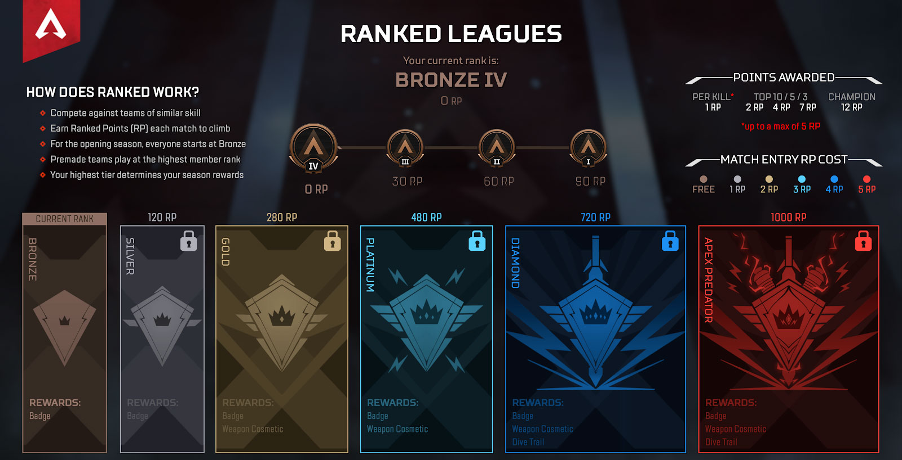

My progression in apex

The Begining
In ranked i started out like all other players in the bottom of bronze four. Bronze is the lowerest rank with the highest being predator. there are also subdivisions in each rank 1-4 with 1 being the highest and closest to the next rank. My first couple seasons i played casually and didnt make it much higher than silver 3 or 2.

First Main
My first character or main was Bangalore and she was who i played for majority of my first couple seasons. Bangalores passive ability made her extra fast which was a really useful and easy to take use ability for me. She stayed my main during all of my climb through silver and cold until i felt like i needed to play a character with more utility.

My growth
Once my team wanted to climb into higher ranks we began to think more about team compisition and characters with abilities that helped the team were more desireable than individual abilities like Bangalores passive. Over the next couple seasons of the game i switched to more support characters like lifeline and my current main Newcastle but ive played the whole roster. I worked a lot on improving my aim and slowly became a better player.

Where i am now
I have now peaked and sadly plateaued in platinum and do not see myself getting higher soon. The game is still very fun but i dont think i put enough time into it to get much better anymore.